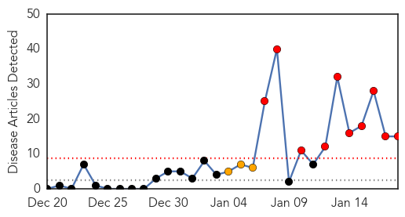
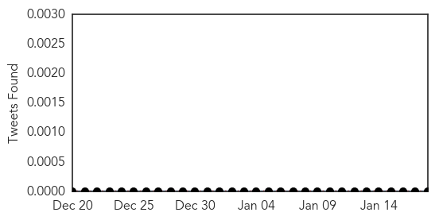

30 Day Trends
Web: 10 alerts, 3 warnings
Twitter: 0 alerts, 0 warnings
Top Articles:
- 0.995
- Canada issues six travel advisories as Canadians go on holiday
- 0.992
- Measles outbreak spreading beyond Disneyland visitors
- 0.992
- Measles outbreak spreading beyond Disneyland visitors
- 0.987
- Disneyland measles: Rapid spread concerns health officials
- 0.971
- Disneyland visitors infecting others
- 0.971
- Refusing measles vaccine could put others at risk
- 0.958
- Disneyland measles outbreak continues to spread
- 0.918
- Ukraine Health Crisis Worsening, Says WHO
- 0.878
- Measles Cases Expanding: Signs, Symptoms and Treatment Options
- 0.864
- Disneyland measles outbreak continues to spread
- 0.805
- Vaccine Controversy Intensified With Disneyland Measles Outbreak
- 0.779
- Health crisis worsens in eastern Ukraine, WHO warns
- 0.775
- Remember Disneyland!
- 0.756
- Disneyland Measles outbreak renews vaccination exemption debate
- 0.696
- Rapid spread concerns health officials
Top Tweets:
-
No tweets found for Jan 18, 2015
Web/News Articles
Tweets
Article Locations